Legenda:Região norte : Verde-claro Região nordeste : Laranja Região sudeste: Verde escuro Região Centro-oeste : Amarelo Região sul : Azul |
||||||||
| 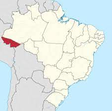 |
Rio Branco - (AC)População:
413 418 hab. Fundação:
28 de dezembro de 1882 |
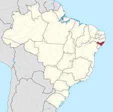 |
Maceió - (AL)População:
1 012 387 hab. Fundação:
5 de dezembro de 1815 |
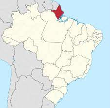 |
Macapá - (AP)População:
503 327 hab. Fundação:
4 de fevereiro de 1758 |
|||
| 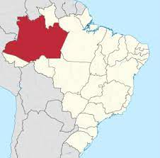 |
Manaus - (AM)População:
2 219 580 hab. Fundação:
24 de outubro de 1669 |
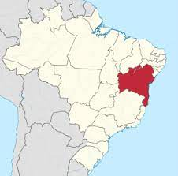 |
Salvador - (BA)População:
2 886 698 hab. Fundação:
29 de março de 1549 |
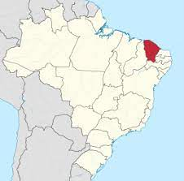 |
Fortaleza - (CE)População:
2 686 612 hab. Fundação:
13 de abril de 1726 |
|||
| 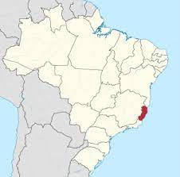 |
Vitória - (ES)População:
358 267 hab. Fundação:
8 de setembro de 1551 |
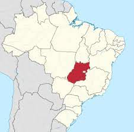 |
Goiânia - (GO)Vitória - (ES)População:
1 466 105 hab. Fundação:
24 de outubro de 1933 |
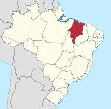 |
São Luís - (MA)População:
1 108 975 hab. Fundação:
8 de setembro de 1612 |
|||
| 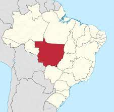 |
Cuiabá - (MT)População:
607 153 hab. Fundação:
8 de abril de 1719 |
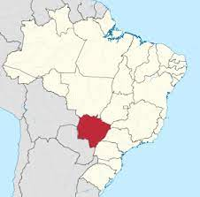 |
Campo Grande - (MS)População:
906 092 hab. Fundação:
21 de junho de 1872 |
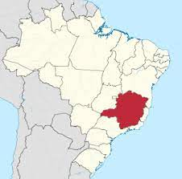 |
Belo Horizonte - (MG)População:
2 521 564 hab. Fundação:
12 de dezembro de 1897 |
|||
| 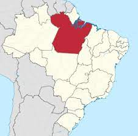 |
Belém - (PA)População:
1 499 641 hab. Fundação:
12 de janeiro de 1616 |
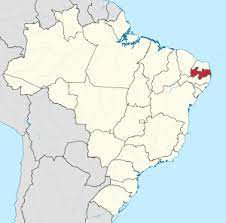 |
João Pessoa - (PB)População:
817 511 hab. Fundação:
5 de agosto de 1585 |
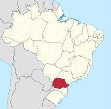 |
Curitiba - (PR)População:
1 948 626 hab. Fundação:
29 de março de 1693 |
|||
| 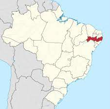 |
Recife - (PE)População:
1 645 727 hab. Fundação:
12 de março de 1537 |
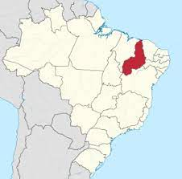 |
Teresina - (PI)População:
868 075 hab. Fundação:
16 de agosto de 1852 |
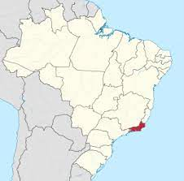 |
Rio de Janeiro - (RJ)População:
6 747 815 hab. Fundação:
1 de março de 1565 |
|||
| 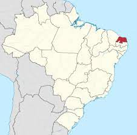 |
Natal - (RN)População:
890 480 hab. Fundação:
25 de dezembro de 1599 |
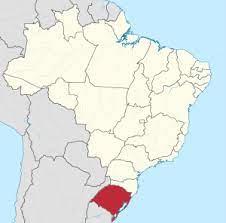 |
Porto Alegre - (RS)População:
1 483 771 hab. Fundação:
26 de março de 1772 |
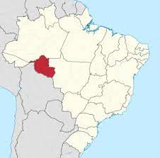 |
Porto Velho - (RO)População:
539 354 hab. Fundação:
22 de outubro de 1914 |
|||
| 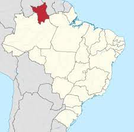 |
Boa Vista - (RR)População:
419 652 hab. Fundação:
9 de julho de 1890 |
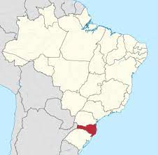 |
Florianopólis - (SC)População:
508 826 hab. Fundação:
23 de março de 1673 |
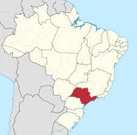 |
São Paulo - (SP)População:
12 325 232 hab. Fundação:
25 de janeiro de 1554 |
|||
| 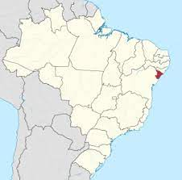 |
Aracaju - (SE)População:
12 325 232 hab. Fundação:
25 de janeiro de 1554 |
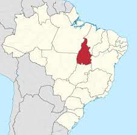 |
Palmas - (TO)População:
664 908 hab. Fundação:
17 de março de 1855 |
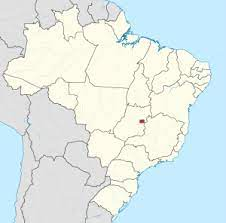 |
Distrito FederalPopulação:
3.055.149 hab. Fundação:
21 de abril de 1960 |
|||